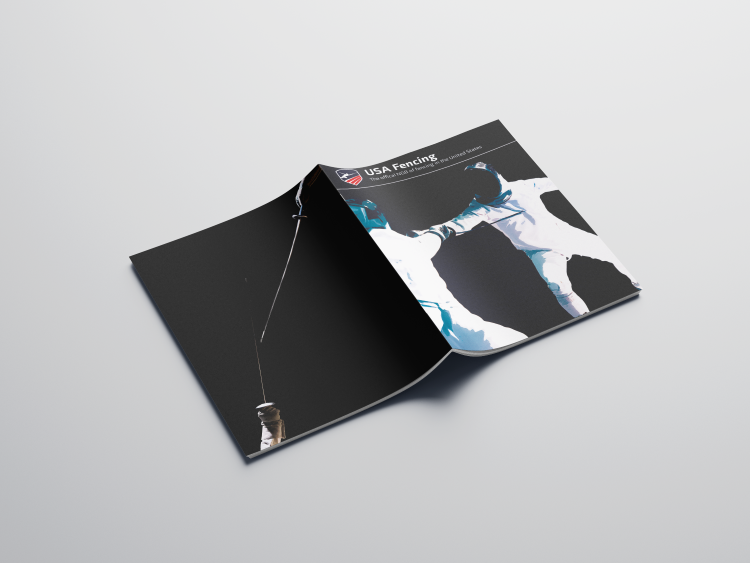
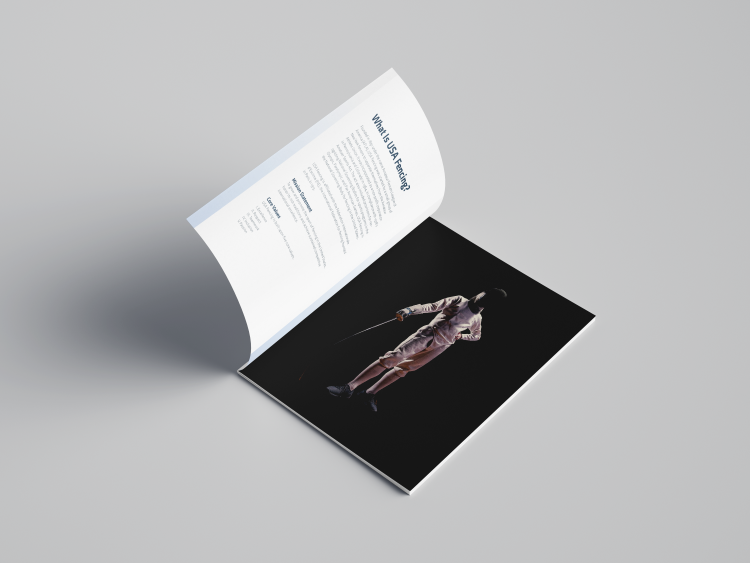
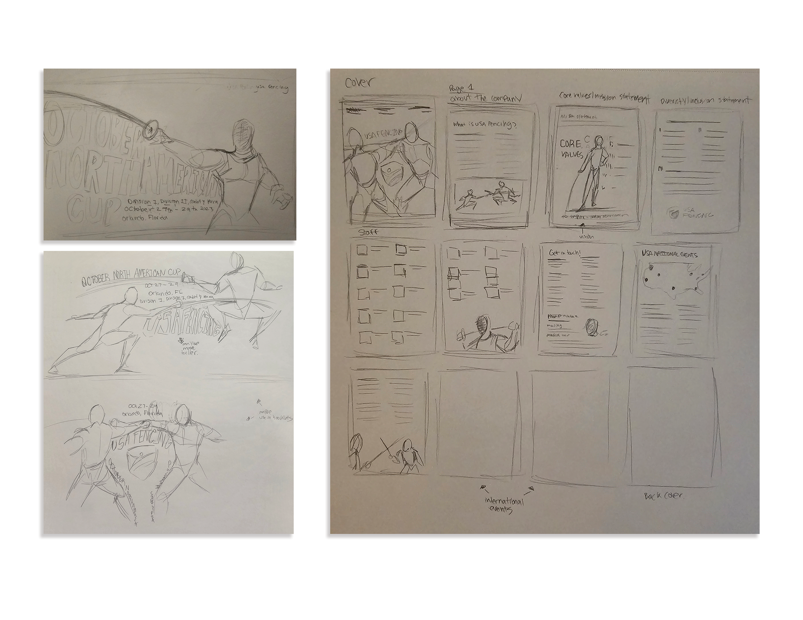
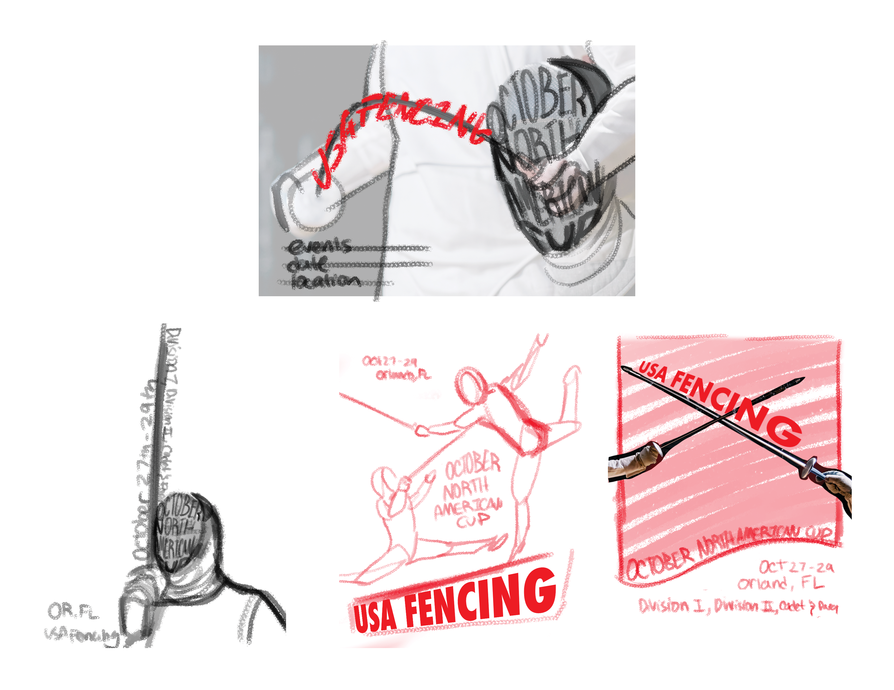
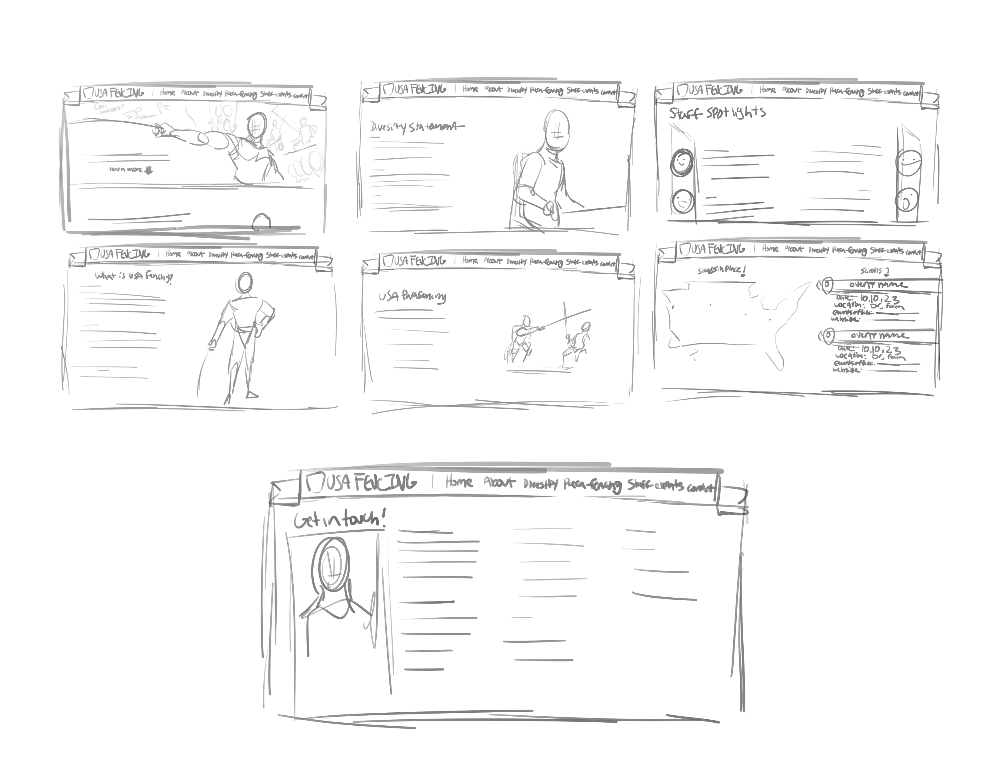

While at the University of Massachusetts: Dartmouth, I was tasked to do a series of designs for a topic of my choice. Whatever I choose had to have a schedule I could design and refer to, which is why dance theaters were recommended. Instead, I choose fencing to di and found USA Fencing as a more than ample source of information to reference. Throughout the semester I designed a poster that advertised a specific event, followed by a informational booklet that featured event details and other information. Once I had all the details of the booklet, I used it as a framework for a website mockup. I drew a lot of inspiration from their official fencing website, while keeping it in line with the style I had developed for the project during the course of the class.




